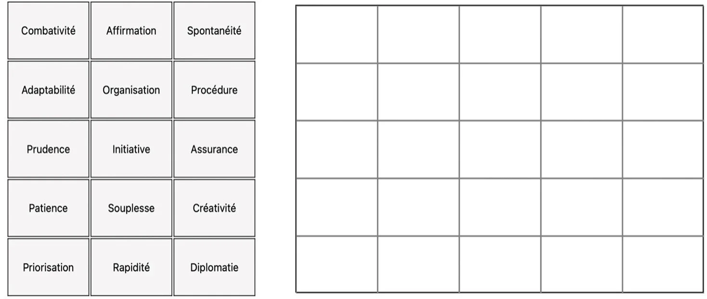
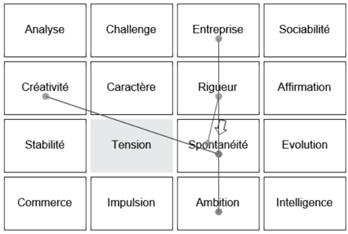

Pour l'expert.
Un outil qui
valorise votre expertise.
Major Exchanges a été pensé pour les praticiens RH — DRH, consultants, coachs, cabinets — qui veulent enrichir leur pratique sans renier ce qui fait leur valeur : le jugement, l'écoute, la lecture humaine.
L'outil donne à l'expert un cadre pour structurer l'entretien, un support de questions et d'exercices d'auto-positionnement, et une matrice de 48 requis pour restituer ses conclusions au décideur final. La méthodologie, déposée historiquement sous le nom Roder5, est aujourd'hui commercialisée sous la marque Major Exchanges.
Le praticien au centre.
Le guide structure l'entretien sans l'enfermer. L'expert garde la maîtrise du tempo, des relances, du recul interprétatif — l'outil offre la grille et le recoupement, pas la décision.
C'est cette articulation — méthode rigoureuse, jugement humain — qui distingue Major Exchanges des questionnaires automatisés du marché.
Quatre leviers
pour votre pratique.
Profondeur d'analyse
Cinq niveaux d'étude — intégration, motivation, organisation, prédisposition et impulsion. Des angles que les outils classiques ne couvrent pas.
Objectivité
Une matrice de 48 requis définie en amont. Un recoupement systématique questionnaire-entretien-exercices. Moins d'interprétation, plus de faits.
Productivité
Prévalidation IA. Support de rédaction des comptes rendus. Vous passez plus de temps sur l'analyse à haute valeur et moins sur la mise en forme.
Crédibilité
Une méthodologie validée par l'OTAN et le Centre de psychologie de Lafayette, utilisée par l'OMC, le CEA, l'IRSN, l'ASN et la DAM. Quatre prix d'innovation entre 2011 et 2014. Un argument de poids face à vos clients ou à votre direction.
Votre première
mission, pas à pas.
Découverte
Vous bénéficiez d'une étude approfondie réalisée par nos conseillers sur votre propre profil. Vous vivez la méthodologie avant de la déployer.
OffertFormation
1 jour pour la version Profil, 2 à 4 jours pour la version Expertise (Profiling, Expertise & Management). Comprendre les fondements, structurer l'entretien, dynamiser le suivi.
Offert · intégrationMission
Ouverture des premiers dossiers. Accompagnement méthodologique pendant les premières études. Autonomie progressive.
AccompagnementDes livrables
prêts à intégrer.
En version Expertise, vous disposez de supports personnalisables pour adapter les études à votre charte et aux formats attendus par vos clients ou votre DRH.
- → Templates de compte rendu personnalisables
- → Grille de requis adaptable à chaque mission
- → Rosace exportable en PDF haute définition
- → Matrice de validation en format tableur
- → Guide de restitution orale aux décideurs

Support de passation · placement des critères

Pré-évaluation IA · analyse séquentielle
Une équipe qui
vous accompagne.
Six profils complémentaires — direction, conseil international, DRH grands comptes, profiling, mentoring et informatique — pour vous transmettre la méthodologie en conditions réelles.
Une marque grise
à votre nom.
Major Exchanges propose une Version Management en marque grise et un logiciel pour vos clients : déployez la méthodologie auprès de vos propres clients sous votre identité, avec votre charte et vos formats de restitution.
Version Management
Diffusion de la méthodologie sous votre marque. Identité visuelle, en-têtes, signatures et formats de restitution adaptés à votre charte de cabinet.
Déploiement chez vos clients
Mise à disposition du système expert directement chez vos clients finaux, avec votre accompagnement méthodologique et la maîtrise de la relation.
Conditions préférentielles
Prix préférentiels pour les sociétés de conseil RH, cabinets de recrutement et consultants indépendants. Modèle de partenariat à co-construire.
La méthodologie valorise l'expertise RH des chargés de recrutement et des conseillers. Elle ne s'y substitue pas : elle lui donne une assise plus solide.